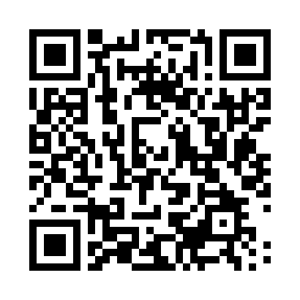
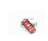
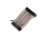
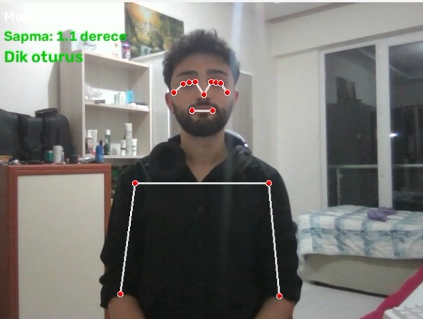
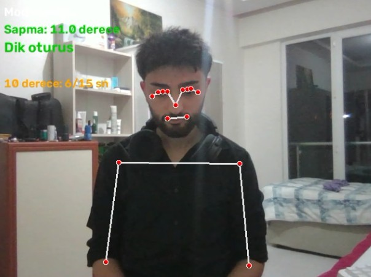

MaternalAI
Gebelik döneminde ortam konforu ve ergonomi istasyonu

Proje sitesi
Sunumu telefonunuzda açın.

GitHub deposu
Kod ve proje dosyalarını inceleyin.
Muhammed Enes Bekiroğlu · Berat Pulat · Emirhan Efe Turhan
İki ihtiyaca tek istasyon
Ortamı izlemek ve uzun süren duruş sapmalarını sessizce bildirmek istiyoruz.
Ortam konforu
Sıcaklık ve bağıl nemi okuyup ortam koşullarına göre fanı yönetmek.
Ergonomi
Kişinin kendi referans oturuşundan uzun süre uzaklaşmasını algılamak.
Vize aşaması
Kamera yazılımı denendi. Parçalar sipariş edildi. Donanımın birlikte çalışması teslimden sonra sınanacak.
Sistem nasıl çalışacak?
İki ölçüm yolu, iki fiziksel çıktı.
Ortam → hava akışı
DHT22 → Deneyap Kart 1A → LR7843 sürücü → 5 V fan.
Duruş → titreşim
Kamera → Python / MediaPipe → süre kuralı → seri port → Deneyap Kart → bel yastığında hafif titreşim.
Ölçüm ve kontrol
Her bileşenin istasyonda üstleneceği görev ve sipariş fiyatı.

Deneyap Kart 1A
743,49 TL
Sensör okuma ve kontrol mantığı.

DHT22
107,52 TL
Ortam sıcaklığı ve bağıl nem ölçümü.

LR7843 MOSFET
49,77 TL
Fanı karttan kontrollü sürme planı.

5 V fan
104,63 TL
Ortam hava akışını artırma hedefi.

Titreşim motoru
96,65 TL
Ses yerine titreşimli uyarı hedefi.
Bağlantı ve görüntüleme
Sipariş toplamı 1.324,16 TL. Kamera ve kargo bu toplamın dışında.

Erkek–erkek jumper
61,96 TL
Deneyap Kart ile breadboard bağlantıları.

Dişi–erkek jumper
61,96 TL
Prototip devre bağlantıları.

830 pin breadboard
63,16 TL
Prototip devre kurulum alanı.

Mikro USB kablo
35,02 TL
Kartı bilgisayara bağlama planı.
AselsanNet AC1080
Fiyat henüz eklenmedi
Duruş analizi için bilgisayara bağlanması planlanıyor.
Duruş sapması nasıl ölçülüyor?
Kullanıcı rahat, dik oturup C tuşuyla kendi referansını kaydeder.
Noktalardan açıya
MediaPipe’ın 3B noktaları kullanılır. Kalçalar görünürse omuz–kalça, aksi halde kulak–omuz doğrusu seçilir. Açı y–z düzleminde dikeye göre hesaplanır.
Açıdan sapmaya
Anlık açı ile referansın mutlak farkı alınır. Yumuşatılmış değerde önceki ölçümün ağırlığı %80, yeni ölçümünki %20’dir.
Sapmadan uyarıya
Başlangıç kuralları 10° üzerinde 15 saniye veya 15° üzerinde 10 saniyedir. Sayaç, ilgili eşiğin 2° altına inilince sıfırlanır.
Kamera denemesinde ne gördük?
Baş/boyun modunda aynı denemeden üç kare. Uyarıyı sapmanın süresi belirliyor.

1,1° · Referansa yakın
Kalibre edilen oturuşa yakın bir kare.

11,0° · Sayaç çalışıyor
10° eşiği aşıldı. 15 saniyenin 6 saniyesi doldu.

14,6° · Uyarı
10° eşiğinin sayacı 15 saniyeye ulaştı.
Ölçümün sınırları
Bu üç kare yazılımın sayaç ve ekran uyarısını gösteriyor.
Kamera açısı
Derinlik tek görüntüden tahmin edilir. Sonraki denemede önden ve yandan çekimleri karşılaştıracağız.
Kişisel referans
Başlangıç duruşu sonucu etkiler. Mutlak fark kullanıldığı için öne ve arkaya hareket aynı büyüklükte sapma üretebilir.
Eşiklerin anlamı
Boyun modunda başın omuzlara göre konumu izlenir. Açı ve süre eşiklerini prototip denemelerinde değerlendireceğiz.
Ortam kontrolü ve C# tasarımı
Sensör okuma, karar verme ve fiziksel çıkış ayrı ayrı denenebilir.
Ölçüm
Deneyap, DHT22’den sıcaklık ve bağıl nem alacak. Sensör sınıfı veriyi kontrollü erişime açacak (kapsülleme).
Karar
IClimateStrategy arayüzünü uygulayan insan ve evcil hayvan stratejileri farklı toleransları değerlendirecek (çok biçimlilik).
Çıkış
Fan hava akışı sağlayacak. Nemlendirici ayrı bir seçenek. Haptik motor seri porttan gelen V1 / V0 komutlarıyla sınanacak.
Sınıftan gelen sorular
Planlanan RAG asistanı cevaplarını proje belgelerine dayandıracak.
Soru
Kapaktaki QR proje sayfasını açar. Planlanan soru formu her soruyu zamanıyla kaydedecek.
Kaynaklı yanıt
Rapor, kod ve devre açıklamaları küçük bölümlere ayrılacak. Sunucu ilgili bölümleri bulup yanıtla birlikte kaynağını gösterecek.
Sunum kapanışı
Benzer sorular gruplanacak. Ekip en çok sorulan konuyu veya ilk gelen soruyu seçerek yanıtlayacak. Canlı soru kaydı ve model bağlantısı geliştirme aşamasında.
Görev dağılımı
Her çalışma paketinin sonucu ortak raporda belgelenecek.
Muhammed Enes Bekiroğlu
Sistem şeması, Deneyap, sensör ve fan bağlantıları. Önerilen katkı %34.
Berat Pulat
Kamera, kalibrasyon ve duruş kurallarının denenmesi. Önerilen katkı %33.
Emirhan Efe Turhan
Web, QR, belge araması ve soru sıralaması. Önerilen katkı %33.
İş–zaman çizelgesi
TÜBİTAK iş paketi düzeninde planlanan dönemler ve çıktılar.
22–23 Kasım
Fikir ve parça seçimi · Mevcut: proje fikri ve sipariş verildi.
24–30 Kasım
Teslim, kaynak ve detay tasarım · Parçaları kontrol et, pin ve bağlantıları netleştir.
1–6 Aralık
Alt sistemleri kur · Sensör, fan, kamera ve web/bot prototipleri.
7–11 Aralık
Birleştir ve dene · Test koşullarını ve gözlenen sonuçları kaydet.
12–15 Aralık
Raporu tamamla ve yükle · Kaynakça, katkı oranları, gerçekleşen işler ve OBS teslimi.
Kaynakça
Teknik dokümantasyon, ekip kayıtları ve kullanılan araçlar.
Teknik belgeler
Google AI Edge · MediaPipe Pose Landmarker
Aosong · AM2302 (DHT22) Technical Manual
GitHub Docs · GitHub Pages
Proje kayıtları
Robotik Uygulamaları vize ödevi duyurusu · Tosya MYO
Ekip sipariş görselleri ve kamera denemesi · Kasım 2026
Yapay zekâ kullanımı
OpenAI Codex, metinlerin düzenlenmesi, sunum ve web uygulamasının hazırlanmasında kullanıldı.
Dinlediğiniz için teşekkürler
Sorularınızı alabiliriz.
MaternalAI
Muhammed Enes Bekiroğlu · Berat Pulat · Emirhan Efe Turhan